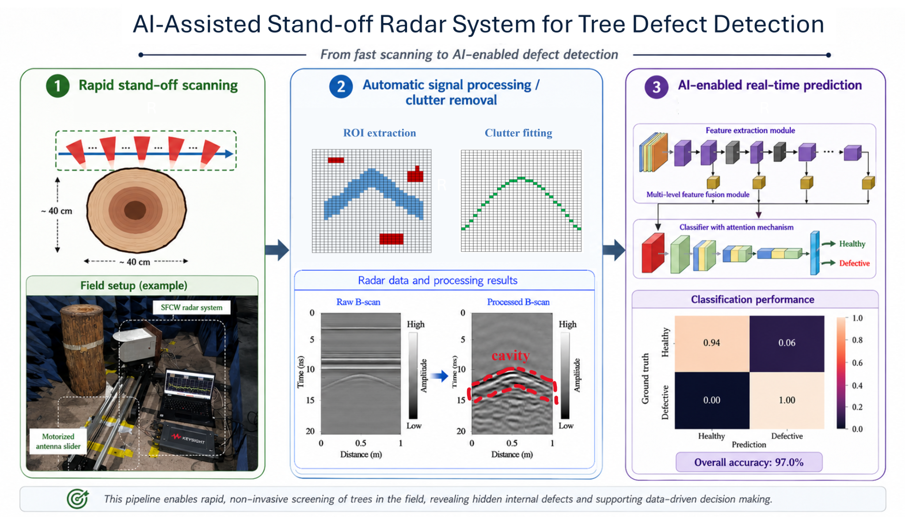
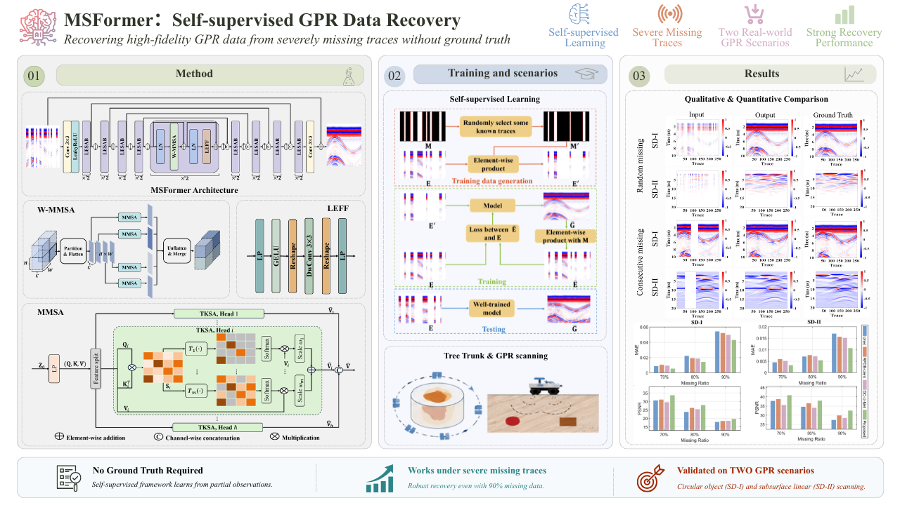

Present
Research Fellow
Nanyang Technological University · School of Electrical and Electronic Engineering
Research Fellow · Nanyang Technological University
I develop physics-informed and data-driven methods for electromagnetic sensing, ground-penetrating radar, computational electromagnetics, and metamaterial modelling.
About
I am a Research Fellow in the School of Electrical and Electronic Engineering at Nanyang Technological University, Singapore. My research focuses on physically interpretable and computationally efficient learning methods for electromagnetic sensing and modelling.
My current work includes AI-assisted ground-penetrating radar for nondestructive tree inspection, physics-informed deep learning for metamaterial modelling and inverse design, multimodal sensing, and numerical methods for complex electromagnetic and multiphysics systems.
Education & Experience
Nanyang Technological University · School of Electrical and Electronic Engineering
Nanyang Technological University · Advisor: Prof. Abdulkadir C. Yucel
University of Illinois Urbana-Champaign · Advisor: Prof. Jianming Jin
Peking University · Advisor: Prof. Mingyao Xia
University of Electronic Science and Technology of China
Research

We developed an AI-assisted tree radar system that enables fully automated and rapid nondestructive inspection of internal tree-trunk defects. Using a novel contactless stand-off scanning scheme, the system completes both data acquisition and interpretation within three minutes. A customized signal-processing pipeline suppresses air–bark clutter, while a multilevel feature-fusion neural network detects defect signatures from the radargrams. The system achieves 96% detection accuracy on real trunk samples and 80% in live-tree field tests.
This framework combines data-driven permittivity estimation, physics-based Kirchhoff migration, and learned shape refinement. The staged design retains physical interpretability while improving reconstruction accuracy on laboratory trunks, real samples, and live trees.

We proposed a self-supervised multisparsity transformer for reconstructing heavily corrupted GPR B-scans with large missing-trace regions. The model adopts a hierarchical U-shaped architecture and multi-sparsity attention to capture both local and global features from incomplete radar data. Without requiring fully sampled B-scan labels, the method achieves robust reconstruction across linear subsurface scanning and circular scanning of cylindrical objects. It outperforms CNN-based reconstruction models on both synthetic and measured datasets, improving the interpretability of incomplete GPR data and supporting downstream detection and imaging tasks.
My earlier work developed high-order time-domain solvers with dynamic mesh adaptation and multirate integration for coupled electromagnetic–plasma problems, enabling efficient resolution of multiscale and strongly varying physical fields.
News
A video preview can be embedded directly in the News section using a YouTube iframe. Visitors can play the video without leaving the homepage.
NTU highlighted the team's radar innovation for detecting internal tree-trunk defects within minutes, developed in collaboration with Singapore's National Parks Board.
Read the NTU media release →NTU EEE featured the research team's work on contactless radar scanning and AI-assisted detection for routine health checks of urban trees.
Read the NTU EEE feature →Journal Publications
J. Qian, Y. H. Lee, K. Cheng, Q. Dai, M. L. M. Yusof, J. Wang, and A. C. Yucel
IEEE Transactions on Geoscience and Remote Sensing, vol. 64, pp. 1–18, 2026.
J. Qian, Y. H. Lee, K. Cheng, M. L. M. Yusof, J. Wang, and A. C. Yucel
IEEE Journal of Selected Topics in Applied Earth Observations and Remote Sensing, pp. 17344–17362, 2026.
K. Cheng, Y. H. Lee, J. Qian, M. L. M. Yusof, J. Wang, and A. C. Yucel
International Journal of Numerical Modelling: Electronic Networks, Devices and Fields, vol. 39, issue 3, 2026. Invited article.
J. Qian, Y. H. Lee, K. Cheng, Q. Dai, M. L. M. Yusof, D. Lee, and A. C. Yucel
IEEE Transactions on Geoscience and Remote Sensing, vol. 62, pp. 1–15, 2024. Highlighted by NTU.
Q. Dai, Y. H. Lee, H. H. Sun, J. Qian, M. L. M. Yusof, D. Lee, and A. C. Yucel
IEEE Journal of Selected Topics in Applied Earth Observations and Remote Sensing, vol. 17, pp. 19668–19681, 2024.
K. Cheng, Y. H. Lee, J. Qian, D. Lee, M. L. M. Yusof, and A. C. Yucel
Sensors, vol. 24, no. 13, 4170, 2024.
Q. Dai, Y. H. Lee, H. H. Sun, J. Qian, G. Ow, M. Lokman, and A. C. Yucel
IEEE Geoscience and Remote Sensing Letters, vol. 19, 2022.
S. Yan, J. Qian, and J. Jin
IEEE Journal on Multiscale and Multiphysics Computational Techniques, vol. 4, pp. 76–87, 2019.
J. Qian, H. Zhang, and M. Y. Xia
International Journal of Antennas and Propagation, vol. 2017, Article ID 3049532, 11 pages, 2017.
K. Cheng, Y. H. Lee, J. Qian, Q. Dai, M. L. M. Yusof, J. Wang, and A. C. Yucel
Submitted to IEEE Transactions on Geoscience and Remote Sensing.
Academic Service
Reviewer for journals including:
Contact
For research discussions and collaboration opportunities, please contact me by email.